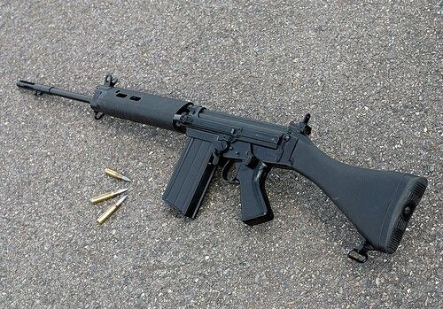
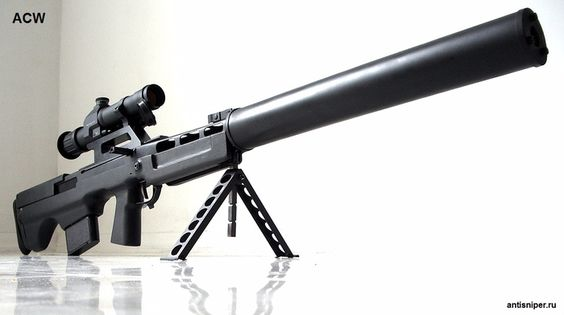
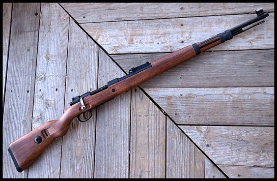

El OTs-03 SVU es un fusil de francotirador diseñado en Rusia por Tula Arms Plant (TsKIB SOO). Se trata de una variante compacta del SVD (Dragunov), con un diseño bullpup que coloca el mecanismo de fuego y el cargador detrás del gatillo para reducir la longitud total sin comprometer la del cañón. Utiliza el cartucho 7.62x54mmR, similar al SVD, y tiene un alcance efectivo de alrededor de 800 metros. Está equipado con un visor óptico y puede tener rieles para accesorios tácticos. Su uso principal es en roles de francotirador para fuerzas armadas y agencias de seguridad, destacándose en operaciones especiales y entornos urbanos. Introducido en la década de 1990, el OTs-03 SVU sigue siendo una opción popular debido a su versatilidad y diseño compacto.
PKP Pecheneg
La PKP Pecheneg es una ametralladora ligera fabricada en Rusia. Desarrollada por la empresa TsKIB SOO, la misma que diseñó el SVU, la PKP Pecheneg está destinada a roles de apoyo ligero y es conocida por su robustez y capacidad de disparo sostenido. Utiliza el cartucho 7.62x54mmR, similar al utilizado en el fusil de francotirador SVD y el PKM, proporcionando una potencia de fuego significativa.
En cuanto a su diseño, la PKP Pecheneg presenta un cañón enfriado por aire y un bípode incorporado para mejorar la estabilidad durante el disparo. También puede equiparse con un trípode para un uso más estacionario. Su caja alimentadora tiene una capacidad mayor en comparación con la PKM estándar, permitiendo una mayor cantidad de municiones en la coraza.
La ametralladora está diseñada para ser resistente y confiable en condiciones adversas. Puede adaptarse a diversos accesorios, como miras ópticas y miras nocturnas, para mejorar la precisión en diferentes situaciones. La PKP Pecheneg se utiliza comúnmente en las fuerzas armadas rusas y otras fuerzas de seguridad para proporcionar un fuego de apoyo eficiente y sostenido en el campo de batalla.
En resumen, la PKP Pecheneg destaca por su potencia de fuego, resistencia y adaptabilidad, siendo una opción popular en situaciones donde se requiere un fuego de apoyo ligero y móvil.
Calibre 7.62x51mm OTAN
Armas que lo usan
SR 25
El SR-25, desarrollado por Knight's Armament Company en Estados Unidos, destaca por su diseño modular y precisión en roles de francotirador y tirador selecto. Utiliza el cartucho 7.62x51mm NATO, ofrece capacidad semiautomática, y su plataforma es adaptable con rieles para accesorios tácticos. Equipado con miras telescópicas y sistemas de miras nocturnas, es elegido por fuerzas militares y agencias de seguridad en todo el mundo. Desde su introducción en la década de 1990, el SR-25 ha evolucionado para mantenerse relevante en entornos operativos modernos. Su capacidad de fuego controlado y precisión a larga distancia lo convierten en una opción eficaz en diversas situaciones tácticas.
FN FAL

El FN FAL, Fabrique Nationale Fusil Automatique Léger, es un rifle de asalto belga que ha tenido un impacto significativo desde su introducción en la década de 1950. Conocido por su robustez y potencia de fuego, utiliza el cartucho 7.62x51mm NATO. Adoptado por múltiples países, el FAL se ha destacado en conflictos a lo largo de las décadas. Su diseño confiable y su capacidad para adaptarse a diversas situaciones tácticas han contribuido a su longevidad en el servicio militar.
Calibre 12.7x55mm STs-130
arams que lo usan
ASH-12
La ASH-12 es un fusil de asalto y ametralladora diseñado en Rusia. Destaca por su capacidad para disparar el cartucho especial 12.7x55mm, que combina potencia de fuego con un diseño compacto. Utilizado en roles de asalto y combate cercano, la ASH-12 presenta una construcción robusta y un diseño bullpup para reducir la longitud total sin comprometer la longitud del cañón. Adaptada para enfrentar amenazas en entornos urbanos, la ASH-12 es apreciada por su versatilidad y capacidad de penetración. Su introducción en las fuerzas armadas rusas ha proporcionado a los soldados una opción única para situaciones tácticas específicas.
VSSK Vykhlop

La VSSK Vykhlop es un rifle de francotirador bullpup diseñado en Rusia. Se distingue por su capacidad para disparar el cartucho especial 12.7x55mm, diseñado específicamente para este rifle. El diseño bullpup contribuye a su longitud más corta sin sacrificar la longitud del cañón, haciéndolo adecuado para operaciones de francotirador en entornos urbanos y cerrados. La VSSK Vykhlop es apreciada por su potencia de fuego y capacidad de penetración, lo que la convierte en una opción eficaz para enfrentar amenazas en situaciones tácticas específicas. Su introducción ha proporcionado a las fuerzas rusas una herramienta especializada para operaciones de francotirador en entornos complejos.
Calibre 7.92x57mm
Armas que lo usan
Karabiner 98 kurz

El Karabiner 98 kurz (K98k) es un rifle de cerrojo alemán que se convirtió en el estándar de la infantería alemana durante la Segunda Guerra Mundial. Utiliza el cartucho 7.92x57mm Mauser y es conocido por su precisión y robustez. Su diseño simple y confiable, junto con su capacidad de disparo preciso a larga distancia, hizo del K98k un arma icónica. Desde su introducción a finales de la década de 1930, el K98k ha dejado una marca indeleble en la historia militar y ha sido apreciado por su efectividad en el campo de batalla.
Gewehr 98
La MG 42 es una ametralladora general alemana diseñada durante la Segunda Guerra Mundial. Reconocida por su alta cadencia de fuego, es un arma icónica que ha influido en el diseño de ametralladoras modernas. Utiliza el cartucho 7.92x57mm Mauser y es apreciada por su capacidad para proporcionar un volumen de fuego sustancial. El diseño innovador de la MG 42 incluye un cañón intercambiable para evitar el sobrecalentamiento durante el fuego sostenido. Esta ametralladora ha demostrado ser efectiva en el campo de batalla y ha dejado una marca duradera en la historia militar, siendo considerada una de las ametralladoras más notables del siglo XX.